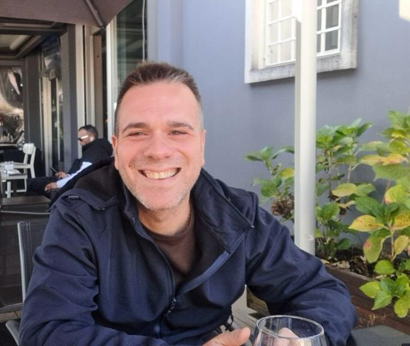
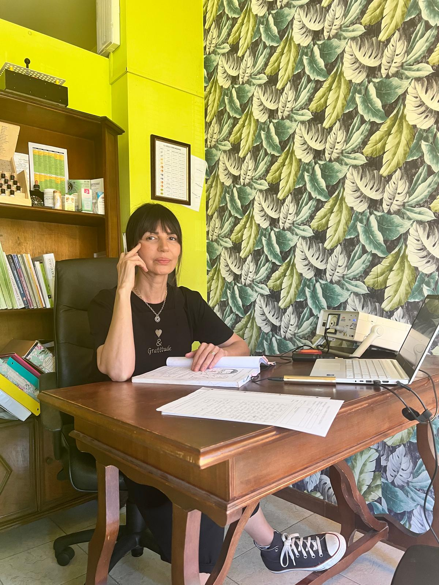
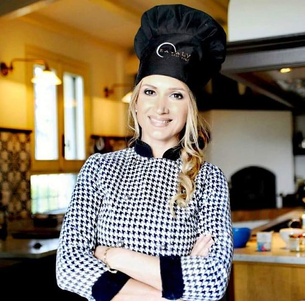
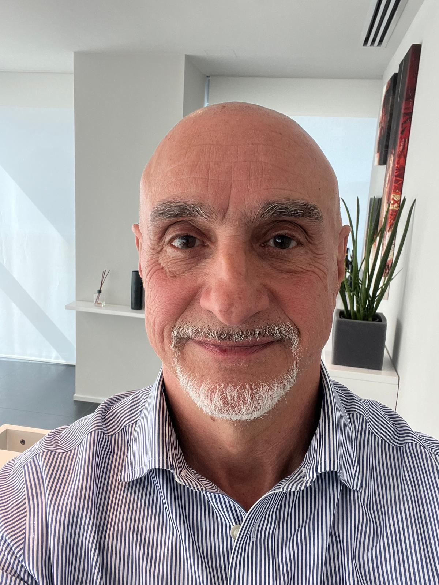
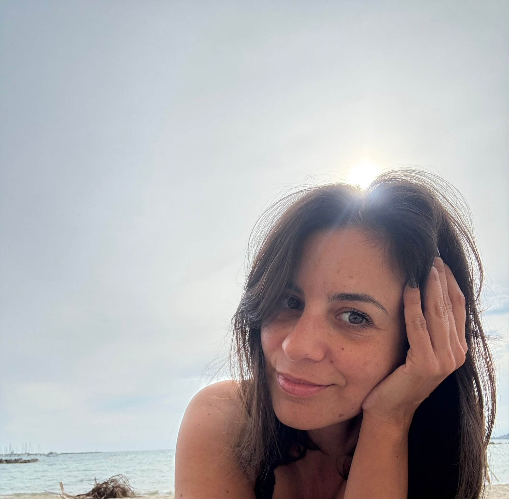
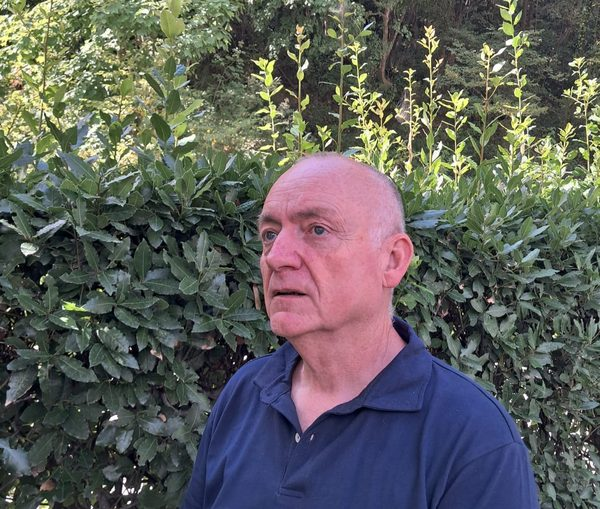
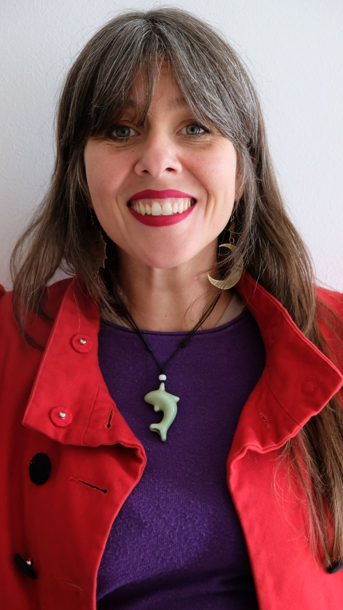

Connessione con le
Guide Spirituali
10:00 – 18:00
Via Macia 102, Carmignano
342 303 3404
Il dialogo con le proprie guide spirituali è un tema affascinante e intimo come un sussurro nel cuore.
Immagina di sederti in un angolo tranquillo della tua anima, lì dove i pensieri si placano e l'eco del mondo esterno si attenua. È in questo spazio di quiete interiore che la possibilità di connettersi con le guide spirituali si fa più nitida.
Non c'è un unico modo "giusto" per intavolare questa conversazione. Per alcuni, si manifesta come un'intuizione improvvisa, un lampo di saggezza. Per altri, assume la forma di un sogno vivido, carico di simbolismi. Queste guide — che siano angeli custodi, spiriti guida o antenati saggi — sono lì per sostenerci nel nostro cammino, offrendoci prospettive più ampie e un faro di luce quando ci sentiamo smarriti.
Programma
Cosa imparerai
Tecniche pratiche di connessione
Cosa portare







